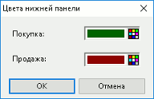

Настройка таблицы
Настройка окна создания таблицы котировок
Для создания новой Таблицы котировок выберите инструмент из раскрывающегося списка, в поле «Брать шаблон» выберите один из сохраненных шаблонов.
Настройка окна редактирования таблицы котировок
- Таблица котировок может принимать вид:
- – отображает все параметры в один столбец (1). При этом лучшая цена покупки отделена от лучшей цены продажи чертой-разделителем. Котировки на покупку и продажу по одной цене отображаются в одной строке и имеют вид: «спрос / предложение».
- – имеет один общий столбец «Цена» (2). Параметры заявок на покупку и заявок на продажу
отображаются в разных столбцах.
- – отображает параметры спроса и предложения в разных столбцах (3). При этом котировки на покупку упорядочены по убыванию цены заявки, а котировки на продажу – по возрастанию цены заявки таким образом, что лучшие цены заявок отображаются в первой строке окна.
- «Лучшие котировки видны всегда» - если флажок включен, то, независимо от размера окна, строки располагаются таким образом, чтобы лучшая цена покупки и продажи были видимыми.
- «Покупку показывать сверху» - если флажок включен, то котировки располагаются в порядке возрастания цены заявки (сверху заявки на покупку, снизу заявки на продажу). Если флажок снят, то котировки сортируются по убыванию цены заявки.
- «Использовать drag-and-drop» – включение возможности замены и снятия активных заявок пользователя путем перетаскивания строки мышью.
При использовании режима drag-and-drop цена котировки определяется следующим образом:
- при перетаскивании котировки в верхнюю область какой-либо строки таблицы отображается цена на один шаг больше, чем цена котировки данной строки;
- при перетаскивании котировки в центральную область какой-либо строки таблицы отображается цена котировки данной строки;
- при перетаскивании котировки в нижнюю область какой-либо строки таблицы отображается цена на один шаг меньше, чем цена котировки данной строки.
- Если котировки в таблице отличаются на один шаг цены, то цена в нижней части строки совпадает с ценой следующей котировки, а цена в верхней части строки совпадает с ценой предыдущей котировки.
- «Разреженный стакан» – включить отображение цен, по которым не выставлено котировок. Если флажок включен, то между строками с котировками в окне добавляются промежуточные строки, в соответствии с шагом цены для данного инструмента, при этом поле «Количество» в них пустое.
В данном режиме признак «Лучшие спрос и предложение видны всегда» недоступен.
Признак «Разреженный стакан» применяется только для котировочных окон вида (1) и (2). Если включен признак «Выделять котировки цветом», то настройка цвета распространяется только на строки, по которым выставлены котировки.
«Выделять котировки цветом» – выделение котировок цветом текста и цветом фона ячейки. Нажатием на кнопку «…» открывается окно «Цвет котировок» для назначения цвета текста и цвета фона отдельно для котировок на покупку и на продажу. Котировки на покупку и продажу по одной цене выделяются серым цветом.
О работе с цветом см. Настройка цвета в таблицах и графиках.
- Cвойство недоступно для настройки Таблицы котировок с расположением цены
заявок на покупку и на продажу в разных столбцах.
«Выделять свои заявки» – выделение шрифтом и/или цветом заявок, выставленных самим пользователем. Нажатием на кнопку «…» открывается окно «Формат ячеек» для дополнительной настройки шрифта, а также цвета текста и фона в ячейке:
«Панель торговли» – включение отображения в Таблице котировок панели инструментов для ввода заявок. Нажатием на кнопку «…» открывается окно «Настройки панели торговли».
При использовании панели торговли в Таблице котировок становятся доступными дополнительные комбинации клавиш.
«Информация по инструменту» – настройка отображения информационных панелей:
- «Верхняя панель» – включение отображения панели информации по инструменту. Нажатием на кнопку «…» открывается окно настройки панели.
- «Нижняя панель» – включение отображения панели информации по инструменту. Нажатием на кнопку «…» открывается окно «Цвета нижней панели» для выбора цвета текста отдельно для значений параметров покупки и продажи:

«Быстрый ввод/снятие заявки» – включение режима быстрого ввода заявки.
- ВАЖНО! Перед использованием режима быстрого ввода заявки внимательно ознакомьтесь с особенностями его применения, так как ввод заявок осуществляется без подтверждения.
«Быстрый ввод объема заявки» – настройка предустановленных значений объема заявки, используемых в режиме быстрого ввода. Позволяет ввести до 3 величин объема, измеряемых в лотах. Подробнее см. Настройка объемов заявки.
«Брать отступ цены» – настройка предустановленных значений отклонения цены вводимой заявки от цены в выбранной строке Таблицы котировок. Значение указывается в количестве минимальных шагов цены. Параметр доступен при включенном режиме быстрого ввода заявки. Подробнее об использовании данной функции см. Отступ цены.
«Фильтрация»:
- «Применять глобальный фильтр клиентов» – включение действия в Таблице котировок Общего фильтра по коду клиента.
- «Фильтр клиентов» – фильтрация по коду клиента. Предназначен для выбора клиентов, заявки которых учитываются при расчёте суммарного собственного объема (столбцы «Своя покупка»/«Своя продажа» либо «Свой объем») в Таблице котировок.
«Доступные параметры / Заголовки столбцов» – выбор отображаемых параметров и настройка их очередности.
- Нажатие кнопки «Перевернуть» меняет порядок следования заголовков столбцов
на обратный.
Панель информации по инструменту
- «Доступные параметры» – выбор отображаемых параметров и настройка их очередности. Выбранные параметры помечаются флажками.
- «Переносить на … строки» – если флажок включен, то информационная панель занимает указанное количество строк. Значение по умолчанию: «2». Если флажок снят, то данные располагаются в одной строке.
- «Название» – настройка цвета текста названий отображаемых параметров.
- «Значение» – настройка цвета текста значений отображаемых параметров.
При нажатии кнопки «OK» изменения сохраняются, окно настройки закрывается. Нажатие кнопки «Отмена» закрывает окно без сохранения изменений.
См. также: